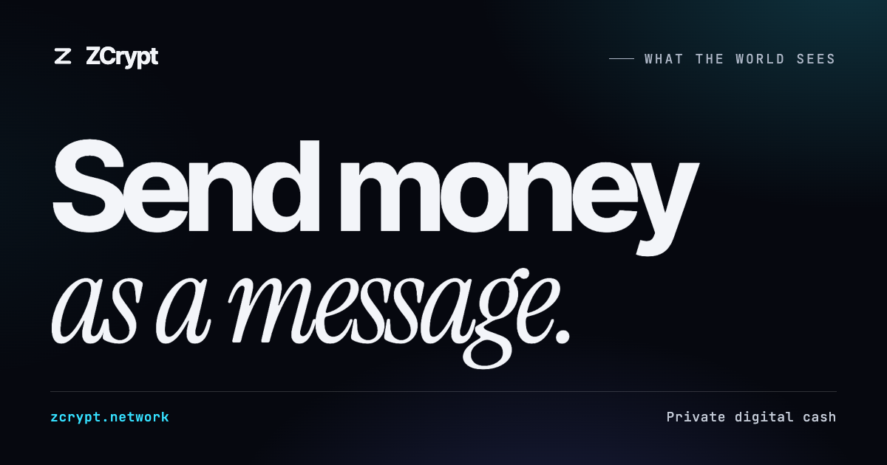

Brand
One mark. Used as it is.
ZCrypt is drawn once and used everywhere: the site, the desktop wallet, the phone and the explorer. Take what you need for an article, a listing or an integration. Do not redraw it, recolour it or add effects.
01
The mark.
A Z in one stroke with round ends. On its own it takes the colour of the text around it: white on ink, ink on white. On the signal gradient it becomes the tile, which is the app icon and the avatar.
- Keep clear space of one bar-height on every side.
- The smallest size is 16 px.
- The tile's corner radius is 27.5% of its side.
- No outlines, shadows, tilts or other colours.
02
The name.
| Written | Means | Example |
|---|---|---|
| ZCrypt | The network, the project and the wallet. Capital Z, capital C. | Pay with ZCrypt |
| ZCRYPT | The coin, in capitals. | 1,000 ZCRYPT |
zcrypt-1 | The chain id of the live network, in mono. | zcrypt-1 |
| zBTC | Bitcoin inside ZCrypt. Small z, capital ticker. | 0.05 zBTC |
The wordmark is Inter Tight at weight 700 with −0.03em tracking, beside the mark. It is never stretched, outlined or set in another face.
03
Colour.
Ink and white carry almost everything. Cyan is the one signal colour, and it is used sparingly: a link, a number, the mark on the tile. Green, amber and red report a state and are never decoration.
04
Type.
Display · Inter Tight 700 · −0.055em
Send money as a message.
Emphasis · Instrument Serif italic
One phrase in a headline, never a whole one.
Body · Inter Tight 400 · 18px
Short sentences in plain words. The same face is bundled in the wallets, so it renders offline.
Labels and data · JetBrains Mono
BLOCK 1,810,442 · 2558392D46D9963F…309F0C88
All three faces are under the SIL Open Font License.
05
Shape and voice.
Lines, not boxes
Sections are divided by hairlines. Cards are used where something can be pressed or picked up, at an 18 px radius. Inputs and chips use 12 px.
One button
The main action is a white pill with ink text. There is one per screen.
Say what happens
"Send", then "Sent". No capitals for emphasis, no exclamation marks, no jargon where a plain word exists.
Quiet motion
One easing, cubic-bezier(.22, 1, .36, 1). Nothing moves for people who turned motion off.
06
Files.
SVG where possible. The PNGs are rendered from the same source.



Questions about using the brand: security@zcrypt.network. The same files are in brand/ on GitHub.